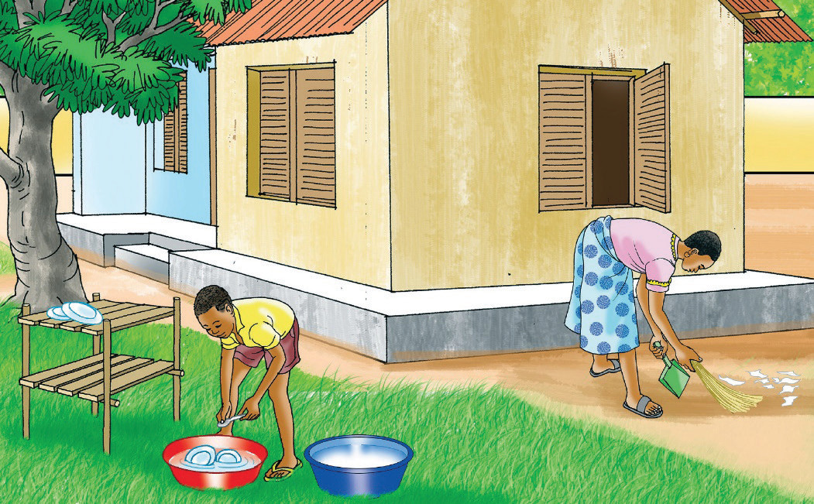

Fikiri anapokuwa shuleni, husoma kwa bidii. Anajua kusoma, kuandika na kuhesabu. Huwasaidia wanafunzi wenzake ambao huhitaji msaada. Rafiki yake Fikiri anaitwa Tumaini. Tumaini alikuwa hawezi kuhesabu vizuri lakini Fikiri alimsaidia. Siku hizi Tumaini anaweza kuhesabu vizuri. Walimu na wanafunzi wanampenda sana Fikiri.
Fikiri ni mwanafunzi mtiifu. Hutekeleza maelekezo anayopewa na wazazi au walezi na hata wanafunzi wenzake. Anapokuwa shuleni huwaheshimu walimu na viongozi wote. Fikiri ni mfano bora wa kuigwa.
Siku moja, Fikiri alikuwa anatoka shuleni kuelekea nyumbani. Njiani alikutana na bibi mmoja. Bibi alikuwa amebeba kuni kichwani na kikapu mkononi. Fikiri alimsalimia kisha akamwambia, “Bibi naomba nikusaidie kubeba kikapu.”